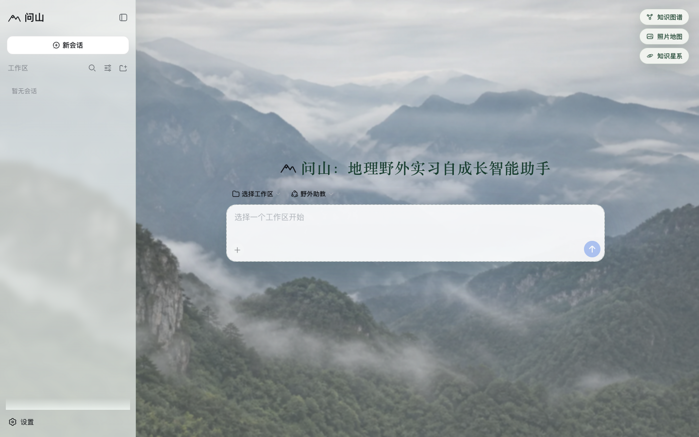
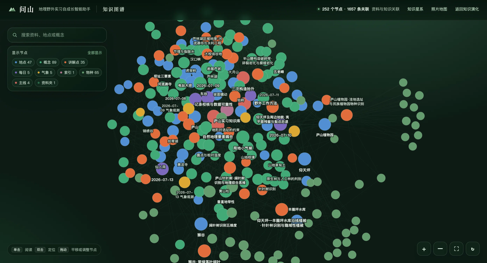

把一次野外实习，
变成一套会生长的知识库。
讲义、PDF、照片、录音、GIS 数据丢进去，问山自动抽出知识草稿；教师审核、口令发布后， 学生即可现场提问、看点位讲解、在真实地形上翻照片。答不上来的问题会变成下一轮补资料的清单。

野外实习的知识，每年都在从零开始。
资料散在网盘与相机里，讲解靠临场记忆，学生的问题问完就散了。通用聊天框能答，但给不出来源、不理解点位与路线，也不敢让错的内容进课堂。
◷ 备课靠翻旧文件
微信群、网盘、个人笔记、纸质讲义、SD 卡各存一份；下一届开课，上一届的整理成果找不到入口。
✦ 现场被问住
学生问「这层砂岩为什么比下面软」，教师手里没有可检索的资料，问题当场流失，也不会进入下一届的准备。
⌘ 通用 AI 不懂空间
「锦绣谷附近讲了什么」需要点位、路线、日期的结构，纯关键词或纯向量检索给不出 400 米内的讲解点。
一条闭环：AI 起草，人做决定。
抽取是生成式的——同一份资料两次跑出来的节点数会不同（实测 13 / 18）。所以草稿必须过人的手，发布必须输入完整口令；没有「自动入库」这个选项。
确认发布 draft-xxxxxxxx发布门禁在存储层强制：普通「可以」「继续」不会触发，只读模式没有任何写入工具。不是提示词自觉，是代码约束。
六件事，一件不少。
从资料收录到现场答疑，再到缺口补料，同一份已发布知识贯穿全部界面。
↥ 上传即构建
落库后自动按小节切块，用「设置 > 模型」当前选中的模型抽取讲解点 / 地点 / 概念 / 物种 / 气象 / 每日 / 主线七类节点，产出待审草稿。
◉ 三路检索
中文二元组 BM25 + 知识图谱双链扩展 + 空间距离衰减融合；问「X 附近讲了什么」按 400 米内讲解点作答。
⚑ 缺口闭环
答不上来就明确说未覆盖，并把原话登记为知识缺口；重复提问只累计次数，补料发布后逐条销账。
◭ 照片地图
实习照片按讲解点聚簇，落在真实地形晕渲底图上，支持逐日路线动画与「回放全程」。
✧ 知识星系
三维星系视图，节点按类型发光、关联线粒子流动，可旋转、聚焦并阅读节点正文。
⛨ 可追溯
事实源是 append-only 的事件日志，重启重放；原始资料、提取结果、草稿、发布、缺口分目录保存。

不是「感觉很准」，是 152 道题。
从知识库自动构建评测集：概念定义 89 题、讲解中心 26 题、空间 37 题；对比纯词法、加图谱、加空间三种配置。报告与图表在 docs/evaluation/，npm run eval 可复现。
评测衡量的是检索质量，不等于生成质量。产品用「回答带来源 + 未覆盖即登记缺口 + 人工发布」三道闸约束内容风险。
三种装法，一条命令。
一条实习线、一个院系、一个基地，规模不同，装法不同；共同点是知识库与凭据都留在你自己的机器上。
一位教师，一台笔记本
克隆仓库、npm start，首次自动安装运行时。默认只监听 127.0.0.1。
- 5 分钟上手
- 适合备课与演示
- 无鉴权，不对外
实习队现场共用
systemd 单服务 + Caddy 反代，队内 15—60 人通过浏览器访问，口令登录。
- systemd 单元与权限收紧
- Caddy TLS / 口令 / 体积限制
- 每日自动备份 + 保留 14 份
已有 Docker 运维
docker compose up -d --build：镜像自带运行时与提取链，具名卷保存数据。
- 内置 HEALTHCHECK
- 健康探针
/wenshan/api/health - GitHub Actions 发布前冒烟
运维 备份与恢复
# 知识库 + 运行状态打成自描述归档
wenshan backup /var/backups/wenshan
# 只带知识、不带 API Key
wenshan backup --data-only
# 先校验，再写回；篡改与路径穿越整体拒绝
wenshan restore <归档> --dry-run
wenshan health --json安全 默认不暴露
应用只监听 127.0.0.1；公网入口由 Caddy 提供 TLS、登录与请求体积限制，并用 --trusted-host 做浏览器信任栅栏。/wenshan/api/health 只返回聚合计数，无正文、无路径、无凭据。
现在就能跑。
# 需要 Node 22.19+、pnpm；处理 PDF/录音/GIS 再加 Python 3.11
git clone <仓库地址> && cd dsh-wenshan
npm install -g pnpm
npm start # 首次会问是否安装，回车即可
# 装好之后：
npm run doctor # 环境体检
npm run health # 服务探活
首次进入主界面，在「设置 > 模型」里配好模型与 API Key，然后切到「知识演化」收录第一份资料。
面向桌面浏览器（Chrome / Edge / Safari，窗口 ≥ 1280×800）；1.0 不做手机端适配。